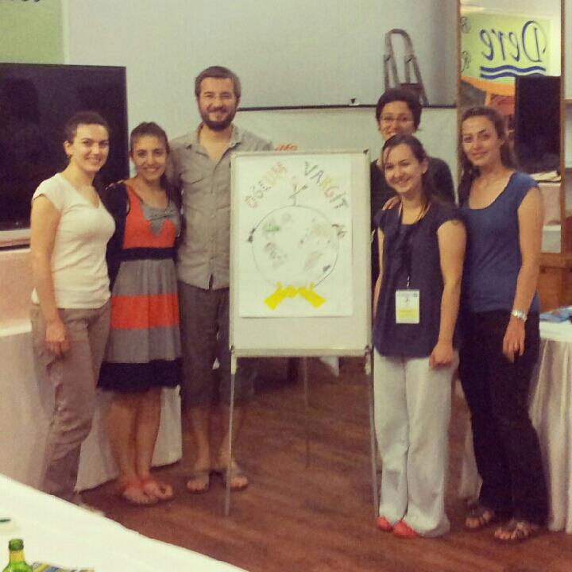
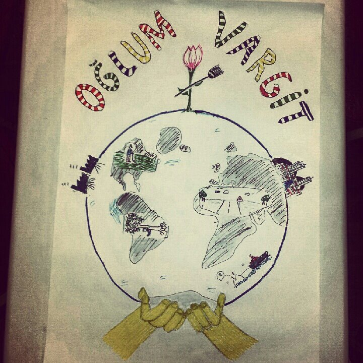
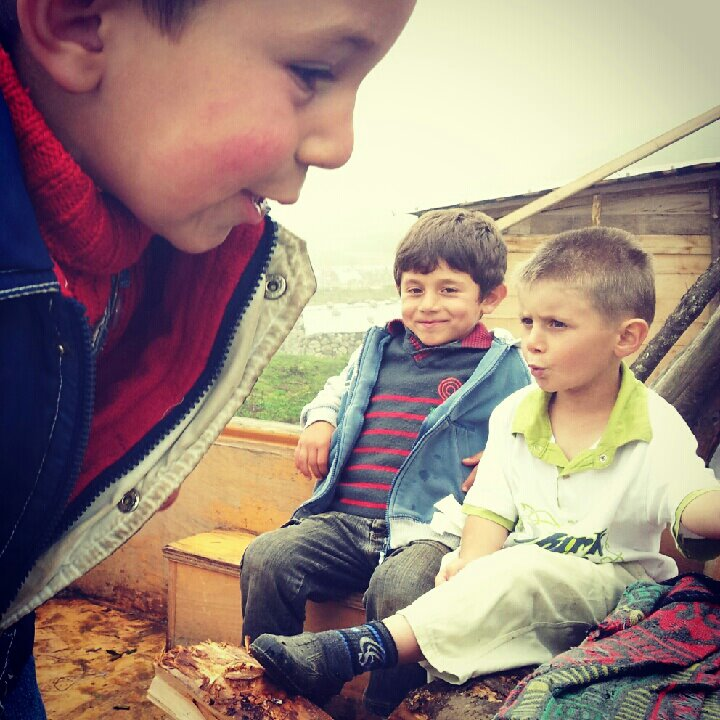
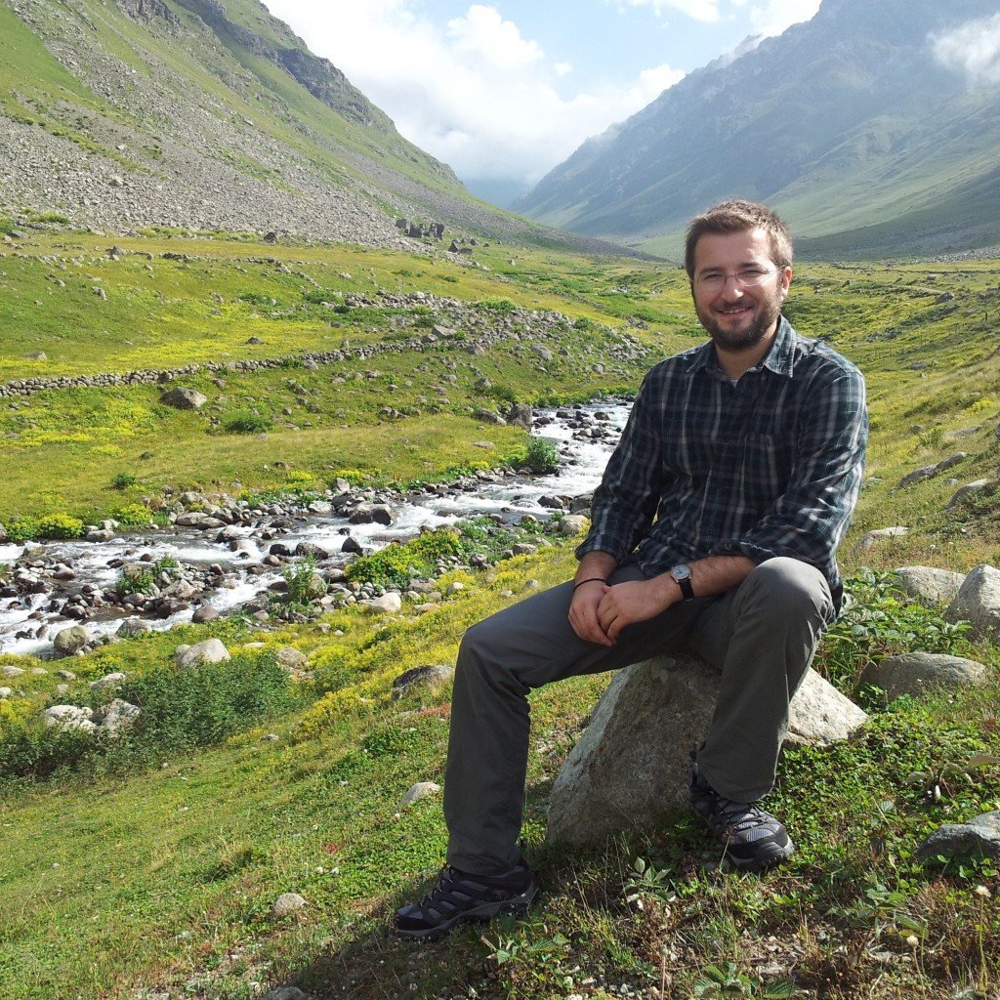
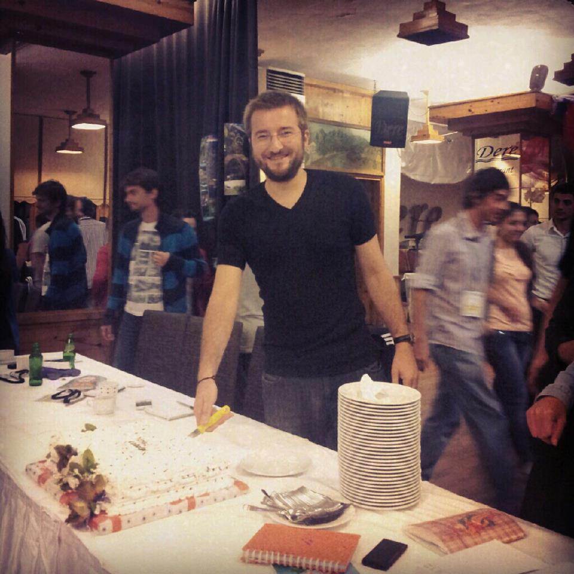

Fotoğraflarla Karadeniz'in doğasında bilim
Geçtiğimiz yıl Ağustos ayında Karadeniz'de düzenlenen bir doğa bilimi kampına katıldım. Hayatımın en güzel günlerinden 10 günü orada geçirdim. İşte benim gözümden fotoğraflarla bilim kampı.
Kampın düzenleneceği Çamlıhemsin'e gittiğimizde havalar çok güzeldi.
Osmancan ve Ali'yle yollara çıktık.
İsimliğim ve çınar yaprağı, Moleskineime çok yakıştı.
Dere tepe demedik, bilim aşkıyla gezdik.
İki minibüsü doldurduk, tepelere tırmandık.
Sislerin içinden geçtik.

Likenleri inceledik.
Toprağın katmanlarını irdeledik.
Ağaçların yaşını nasıl hesaplayacağımızı öğrendik.
Ne olur ne olmaz, ilkyardımı bilmek lazım.
Buzul vadisini yerinde gördük!
Böyle bir yerde ders anlatmak bize de nasip olur umarım ileride...
Böcek yakaladık.
Merve'den hiç bir böcek kaçamaz.
Benden de.
Böcekler Ali'yi de terletti.

Ve sonra böcekleri inceledik.
Böcek koleksiyonumuz çok güzel oldu.
Öğrendiğimiz konularda poster hazırladık.

Ve sunduk.
Posterimiz çok beğenildi.

Fırsat bulunca top oynadık.
Köprülerden geçtik.
Dereleri aştık.

Kalelere çıktık.
Kardan köprüler gördük.
Kivi bahçelerini fark ettik.
Çekirgelerin peşinden koştuk.
Anbarların farelerden korunmak için nasıl bir mimariye sahip olduğunu öğrendik, buna şaşırdık.
Dağları aştık.
Nehirleri geçtik.
Küçüklerle tanıştık.

Yaylalara çıktık.
Asırlık ağaçları gördük.
Arı kardeşler sisler içinde.
2000 metrede uzanmak ayrı güzel. Sisler içinde yüzüyor gibi hissediyor insan.
Yağmurluksuz dışarı çıkmak ıslak dönmeye kucak açmak Karadeniz'de. Tedbiri elden bırakmamak lazım.
Biz gideriz ormana...
Dikilmiş iki fidanım var. İlki şöyle...
Hidayet sağ olsun, beraber diktik.
Ve ikincisi... Herkes bu fidanı çok sevdi!
Karadeniz'in şelaleleri çok güzel.

Binaları da.
Vadileri de.

Bez bebekleri de.
Hocalarımızın hepsi çok iyiydi.
Şoförümüz Ömer Abi'yi ve kızını hepimiz çok sevdik.

Benim et yemediğimi öğrenen otel çalışanları her yerde gördüğüm tepkiyi göstermedi ve bana her öğün vejetaryen yemek hazırladılar.
Yaylada uğradığımız ve horon teptiğimiz yere adlarımızı bıraktık anı olarak.
Sisler içinde horon teptik.

Erkekler ön safa, kızlar ayakta.

Alev bize babasının yaptığı bağ evini anlatıyor. O kadar güzel ifade ediyor ki dalmışız hepimiz.
Otelimizin köpeği çok şirin.
Doğum günümün sürpriz bir pasta ile kutlanması beni çok duygulandırdı.

Karadenizli'nin aklı acayip şeylere çalışıyor. Dere üstünde oturma yeri de bunlardan sadece birisi.
Ali Hoca'yı yakalamışken birlikte fotoğraf çekinmemek olmaz.
Ali motorları çok sever.
Arı kardeşler yağmurluklarıyla.

Bilin bakalım yaylanın şenliği gözlere yansırsa n'olur?
Çaysız Karadeniz olur mu hiç!
Ve her güzel şeyin sonunda olduğu gibi oynamasak olmaz.
2013 senesinde maalesef bu kamp destek alamadı TÜBİTAK'tan. Seneye alırsa mutlaka başvurun derim. Defterinizi ve çantanızı kapıp kampa koşun. Doğa ile dolu muhteşem bir 10 gün yaşayın!


{kind=link}
2 yorum
Ne güzel anlatmışsın İsmail! Fotoğraflar da harika! Tübitak'ın bu doğa kampları kesinlikle muhteşem fırsatlar.. Ben de 2008 yılında Uludağ'da astronomi temalı bir kampa katılmıştım.. On gün boyunca, şu anda hayatımda büyük yer tutan birçok şeyi ilk defa yapma fırsatım oldu ve hala devam eden müthiş dostluklar kurdum.. İlk defa bir dağın zirvesine çıktım, ilk defa bir "doğa yürüyüşü" yaptım, kendi teleskobumu camıyla birlikte yontarak ellerimle yapma fırsatım oldu, dağ bisikletçiliği ile tanıştım.. Keşke diyorum bir kere daha katılabilsem böyle bir kampa.. Karadeniz'de Kaçkar'larda bir kamp, doğa yönünden belki de en çok şey yapabileceğin, öğrenebileceğin bir yer olsa gerek.. Nasıl özendim anlatamam:) Bu güzel anıları canlandırdığın ve bu hisleri uyandırdığın için de ayrıca teşekkürler!
Rica ederim Arif :) Birbirimize haber edelim böyle bir kampın başvuru haberini duyarsak. Ben yeniden katılmayı çok isterim.